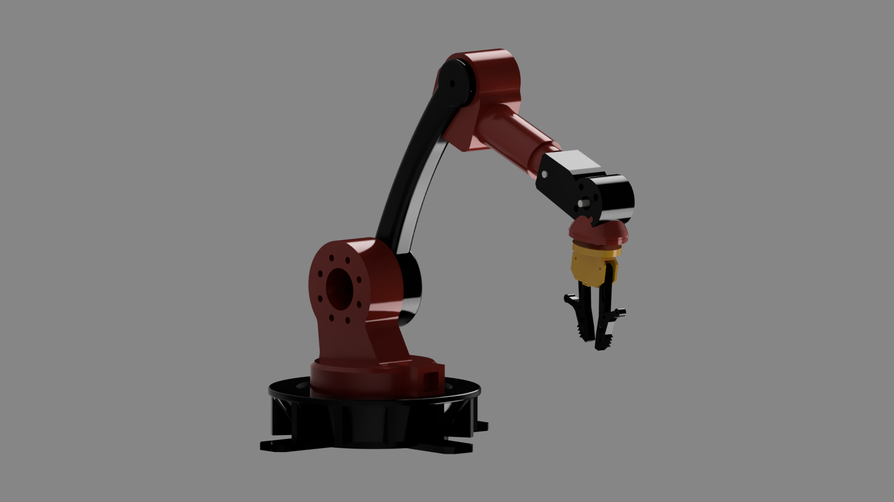
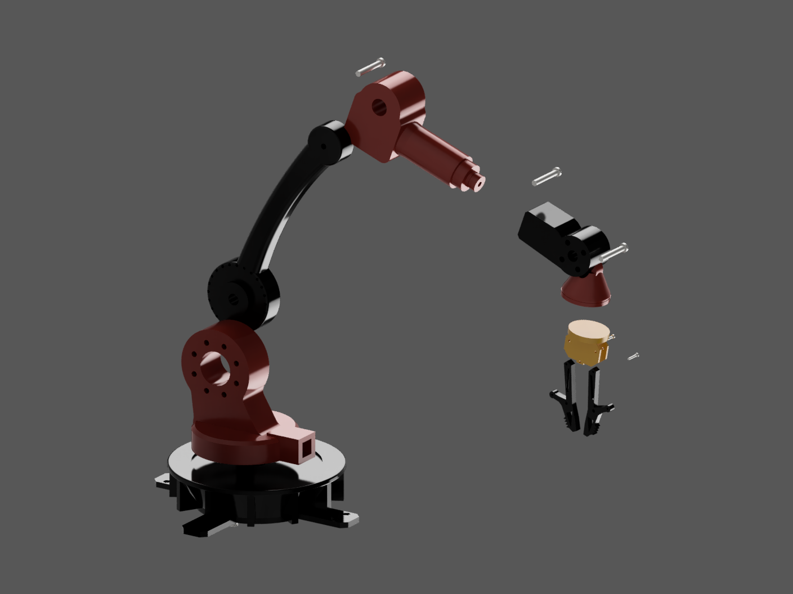
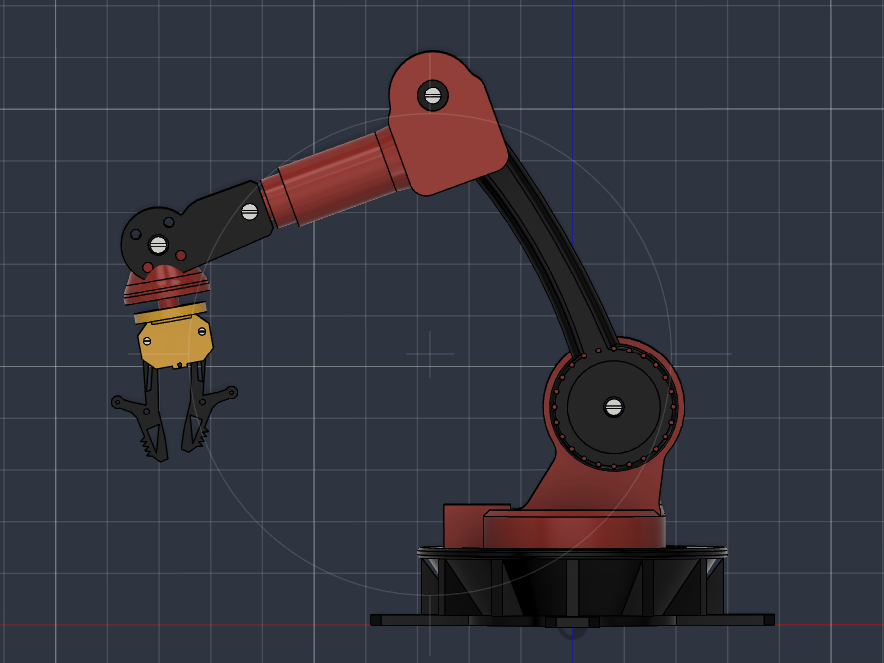

Mehrachsiger Roboterarm mit Parallelgreifer, nach einem 2D-Zeichnungssatz von GECKO-CAD in Fusion 360 nachkonstruiert (02/2026 – 03/2026). Alle Einzelteile, die Baugruppe und die Renderings habe ich selbst erstellt.Multi-axis robotic arm with parallel gripper, rebuilt in Fusion 360 from a 2D drawing set by GECKO-CAD (02/2026 – 03/2026). I created all parts, the assembly and the renderings myself.
Überblick & ZielOverview & aim
Ein Roboterarm dieser Art bewegt einen Greifer über mehrere Drehachsen im Raum und setzt ihn gezielt an einer Position ab. Vorlage war ein Satz technischer 2D-Zeichnungen von GECKO-CAD, ursprünglich für SolidWorks erstellt.A robotic arm of this kind moves a gripper through space over several rotary axes and places it precisely at a position. The template was a set of technical 2D drawings by GECKO-CAD, originally created for SolidWorks.
Ziel war, jedes Einzelteil allein aus den Zeichnungen in Fusion 360 nachzumodellieren, zu einer vollständigen Baugruppe zusammenzusetzen und zu rendern. Der Entwurf stammt von GECKO-CAD, meine Leistung ist die Umsetzung im CAD.The aim was to remodel every part in Fusion 360 from the drawings alone, assemble them into a complete assembly and render them. The design is by GECKO-CAD; my contribution is the CAD implementation.
Der Arm wurde nicht gebaut. Es ist ein reines Konstruktionsprojekt.The arm was not built. This is purely a CAD project.
Was ich gemacht habeWhat I did
Alle Einzelteile aus den 2D-Ansichten und Schnitten der Zeichnungen in Fusion 360 modelliertModelled every part in Fusion 360 from the 2D views and sections of the drawings
Skizzen vollständig bemaßt, sodass sich einzelne Maße später ändern lassen, ohne das Teil neu aufzubauenFully dimensioned the sketches so individual dimensions can be changed later without rebuilding the part
Die Teile zu einer Baugruppe zusammengesetzt: drehbare Basis, Schultergelenk, Oberarm, Unterarm, Handgelenk und ParallelgreiferAssembled the parts: rotating base, shoulder joint, upper arm, forearm, wrist and parallel gripper
Farbgebung wie in der Vorlage umgesetzt: Rot, Schwarz und GoldApplied the colour scheme of the template: red, black and gold
Renderings der Gesamtansicht und eine Explosionsansicht von Handgelenk und Greifer erstelltProduced renderings of the overall view and an exploded view of wrist and gripper
Detailreicher Greifer: Die Greiferbacken mit Verzahnung, Gelenkpunkten und dünnen Stegen waren das aufwendigste Teil. Ich habe zuerst die Grundkontur vollständig bestimmt skizziert und Zähne und Bohrungen erst danach als Muster ergänzt, sodass sich Änderungen sauber durch die Timeline ziehen.Gripper full of detail: The gripper jaws with their teeth, pivot points and thin webs were the most demanding part. I first sketched the base contour as a fully constrained sketch and only then added teeth and holes as patterns, so changes propagate cleanly through the timeline.
Beweglichkeit der Baugruppe: Nach dem ersten Zusammensetzen waren die Teile teils starr verbunden und die Gelenkbohrungen nicht exakt fluchtend. Ich habe jedes Gelenk als Drehgelenk um die jeweilige Stiftachse neu definiert und Bewegungsgrenzen gesetzt, damit sich der Arm kollisionsfrei durchbewegen lässt.Mobility of the assembly: After the first assembly some parts were rigidly joined and the pivot holes were not exactly aligned. I redefined every joint as a revolute joint about its pin axis and set motion limits so the arm can be moved through its range without collisions.
BilderImages

Seitenansicht: drehbare Basis mit Standfüßen, Schultergelenk mit Lochkranz, gebogener Oberarm.Side view: rotating base with feet, shoulder joint with bolt circle, curved upper arm.

Explosionsansicht: Handgelenk und Parallelgreifer zerlegt, Verbindungsstifte sichtbar.Exploded view: wrist and parallel gripper taken apart, connecting pins visible.

Arbeitsstand im Fusion-360-Viewport.Work in progress in the Fusion 360 viewport.
Was ich gelernt habeWhat I learned
Ein Nachbau nach Zeichnung zwingt dazu, jedes Maß bewusst zu lesen. Fehlt eine Angabe, muss sie aus einer anderen Ansicht oder aus dem Zusammenhang der Teile erschlossen werden.Rebuilding from a drawing forces you to read every dimension deliberately. Where a value is missing, it has to be derived from another view or from how the parts fit together.
Die Zeichnung zeigt die Geometrie, aber nicht die Absicht dahinter. Beim Modellieren wird sichtbar, warum Wandstärken, Bohrungen und Anschlussmaße so gewählt sind, wie sie sind.A drawing shows the geometry but not the intent behind it. Modelling makes it visible why wall thicknesses, holes and interface dimensions are chosen the way they are.
Vollständig bemaßte Skizzen zahlen sich spätestens beim Zusammensetzen aus: Passt ein Teil nicht, lässt sich das Maß ändern statt das Teil neu aufzubauen.Fully dimensioned sketches pay off at the latest during assembly: if a part does not fit, the dimension can be changed instead of rebuilding the part.
CreditsCredits
Entwurf und Zeichnungssatz: GECKO-CAD, ursprünglich für SolidWorks erstellt. Die CAD-Umsetzung in Fusion 360, die Baugruppe und die Renderings stammen von mir.Design and drawing set: GECKO-CAD, originally created for SolidWorks. The CAD implementation in Fusion 360, the assembly and the renderings are mine.